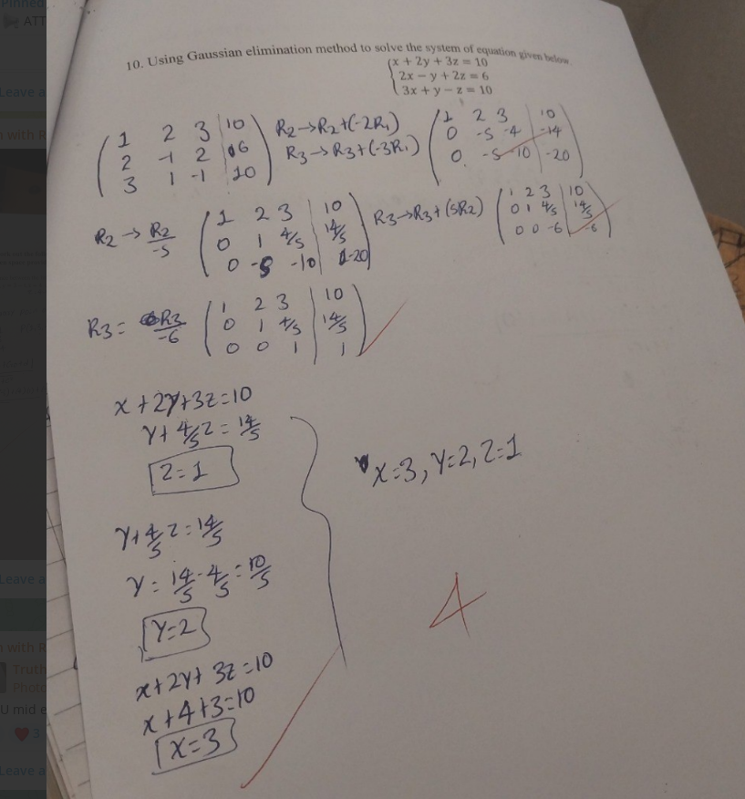
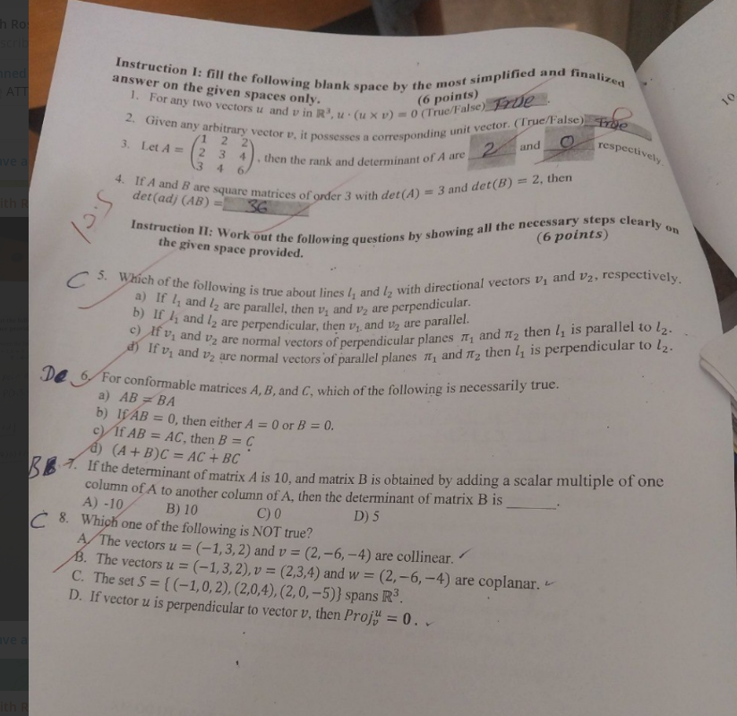

📁 Your folder structure (ready for local images):
Mathematics/├── html/│ └── note-template.html ← this file├── images/│ └── graph.png ← your graph here│ └── parabola-roots.png ← optional extra graphs└── README.txt
📐 General quadratic equation
$$ ax^2 + bx + c = 0 \quad (a \neq 0) $$

Figure 1: Graph of $y = ax^2 + bx + c$ (parabola).
The roots correspond to x‑intercepts.
📁
📁
src="../images/graph.png"
💡 Goal: isolate $x$ by completing the square.
✏️ Step 1 – move constant term
$$ ax^2 + bx = -c $$
Divide both sides by $a$:
$$ x^2 + \frac{b}{a}x = -\frac{c}{a} $$
🔲 Step 2 – complete the square
Take half of $\frac{b}{a}$, square it: $\left( \frac{b}{2a} \right)^2 = \frac{b^2}{4a^2}$
$$ \left( x + \frac{b}{2a} \right)^2 = \frac{b^2 - 4ac}{4a^2} $$
⚡ Step 3 – take square root
$$ x + \frac{b}{2a} = \pm \frac{ \sqrt{b^2 - 4ac} }{2a} $$
🎯 Step 4 – isolate $x$
$$ x = -\frac{b}{2a} \pm \frac{ \sqrt{b^2 - 4ac} }{2a} $$
$$ \boxed{ x = \frac{ -b \pm \sqrt{b^2 - 4ac} }{2a} } $$
✨ quadratic formula — derived by completing the square ✨
📊 Visualizing the discriminant $\Delta = b^2 - 4ac$

$\Delta > 0$ → two real roots
📁
📁
../images/parabola-roots.png
$\Delta$ determines nature of roots
📁
📁
../images/graph.png
📌 Discriminant rule:
$\Delta > 0$ → two real solutions |
$\Delta = 0$ → one double root |
$\Delta < 0$ → complex conjugate roots.
📁 LOCAL IMAGE PATHS — How they work with your structure:
Your current file:
Your image folder:
Mathematics/html/note-template.htmlYour image folder:
Mathematics/images/
- ✅ Correct relative path (go up one level, then into images):
<img src="../images/graph.png"> - Alternative if HTML is in same folder as images:
<img src="images/graph.png">(only if HTML is inside Mathematics/ directly) - Absolute path (less portable, but works):
<img src="C:/Users/You/Documents/Mathematics/images/graph.png">
💡 Quick setup:
- Save this HTML file as
Mathematics/html/note-template.html - Put your graph image as
Mathematics/images/graph.png - Open the HTML in a browser — your graph will appear!
- Convert with Sejda: upload both the HTML and the images folder, or ZIP the entire Mathematics folder
📈 Add your custom graphs here

Your graph: Replace
Example naming:
your-graph-name.png with your actual filename.Example naming:
parabola-example.png, roots-visual.png, discriminant-graph.png

📁 Add as many graphs as you need — just copy the
<div class="figure"> block.
🖨️ Converting to PDF with Sejda (local images):
- Method 1 (recommended): ZIP the entire
Mathematics/folder → upload ZIP to Sejda → all images will be embedded correctly. - Method 2: Upload HTML + images separately using Sejda's "HTML to PDF" tool with multiple file selection.
- Method 3 (simplest for testing): Open HTML in Chrome → Print → "Save as PDF" → images will be included.
✅ Path check: If images don't appear in the browser, verify that
../images/ correctly points to your image folder.
📐 Ready for local images — place your .png files in
Mathematics/images/ and they will appear above.